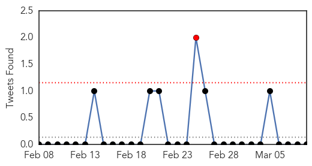
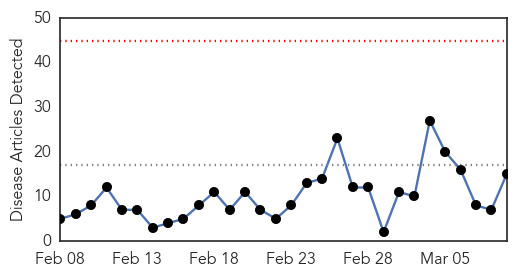
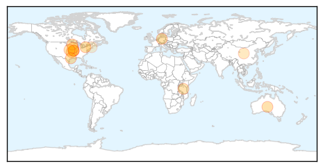

MERS
30-Day Web Trend
16 alerts, 5 warnings

30-Day Twitter Trend
1 alerts, 0 warnings

Article Locations

Article Confidences

Top Articles:
- 0.999
- Middle East respiratory syndrome coronavirus (MERS-CoV) – Germany
- 0.996
- MERS toll rises to 405
- 0.995
- MERS count rises in Saudi Arabia, Germany, Qatar
- 0.991
- Germany MERS update: WHO Global Alert and Response
- 0.977
- German visitor to UAE contracts Mers
- 0.952
- Yanbu begins campaign to combat coronavirus
Top Tweets:
-
No tweets found for Mar 09, 2015
Influenza
30-Day Web Trend
0 alerts, 0 warnings

30-Day Twitter Trend
0 alerts, 0 warnings

Article Locations
Article Confidences

Top Articles:
- 0.997
- Across the USA, flu season winding down
- 0.984
- Experts predict heavy winter flu toll
- 0.971
- Missouri reports avian influenza at Carthage-area turkey farm
- 0.967
- Avian flu detected in Missouri turkey flock
- 0.963
- 2005 Central Florida State Fair E. coli Outbreak
- 0.951
- Officials hopeful that avian flu virus will be contained
- 0.951
- Flu Scan for Mar 09, 2015
- 0.922
- MDA confirms avian influenza in second Missouri facility
- 0.908
- Researchers assess causes of febrile illnesses in Tanzanian children
- 0.900
- Flu pandemic begins
- 0.894
- Avian flu confirmed at turkey farm near Asbury
- 0.819
- Avian influenza confirmed in Missouri turkey flock
- 0.734
- H5N2 strikes Missouri turkey farm
- 0.668
- Government to look into claims that stricter rules on school absenteeism led to illnesses spreading
- 0.518
- American Dryer's eXtremeAir Cold Plasma Clean(R) Technology Kills Influenza A Virus
Top Tweets:
-
No tweets found for Mar 09, 2015